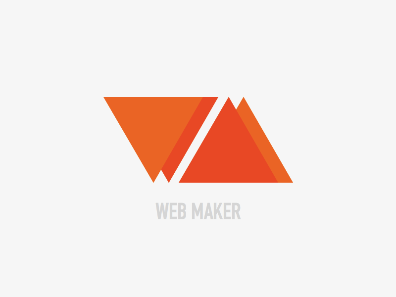

#22264b
Blog | learn The Code
Welcome to the blog of imad benhamou

What is learn the code ©
New Idea Of Learning The Code, Septembre 10, 2017
Learning programming for free is probably an important factor to many people wanting to develop this skill and most of these methods of learning can be done ...
How To Start
Really Simple Step Is how Determined Are You, Septembre 10, 2017
Programming is one of the most valuable skills you can pick up in these modern times, whether for career prospects or to stretch your brain and create something awesome. If you're just getting started on your coding journey, here are ten tips and resources to set you off on the right foot.
Host Your Project For FREE
GitHub is a web-based Git or version control repository and Internet hosting service. It is mostly used for code.
It offers all of the distributed version control and source code management functionality of Git as well as adding
its own featuresGitHub is a development platform inspired by the way you work. From open source to business, you can host and review code, manage projects

Start Bootstrap
Bootstrap is an open source toolkit for developing with HTML, CSS, and JS. Quickly prototype your ideas or build your entire app with our Sass variables and mixins, responsive grid system, extensive prebuilt components, and powerful plugins built on jQuery.

A blazing fast & offline web playground in your browser
Click Next For More Details